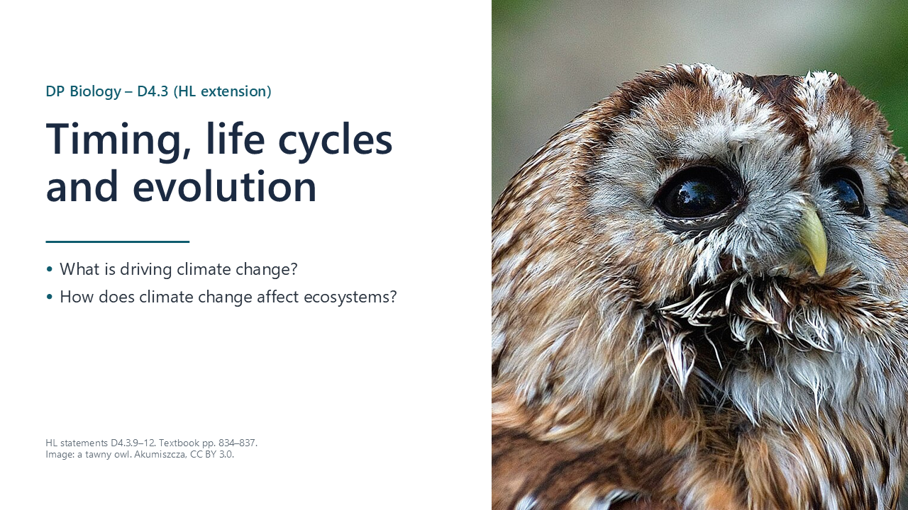
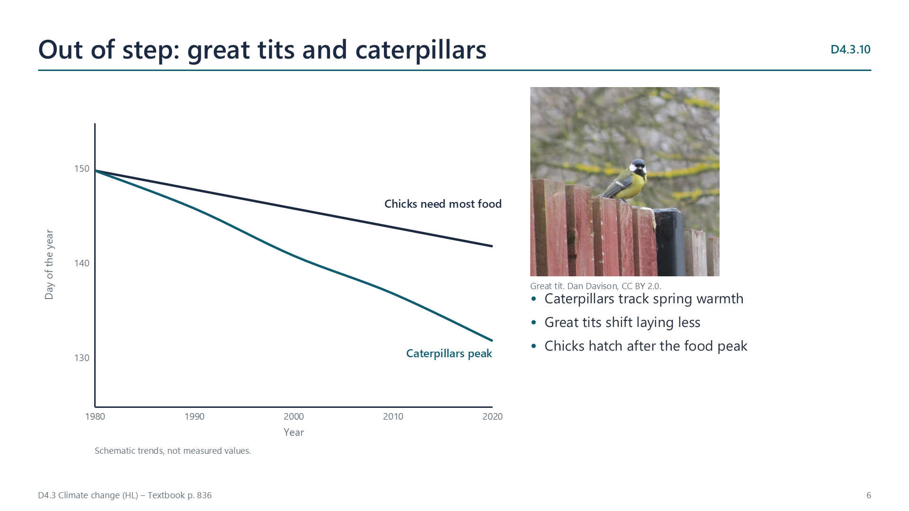
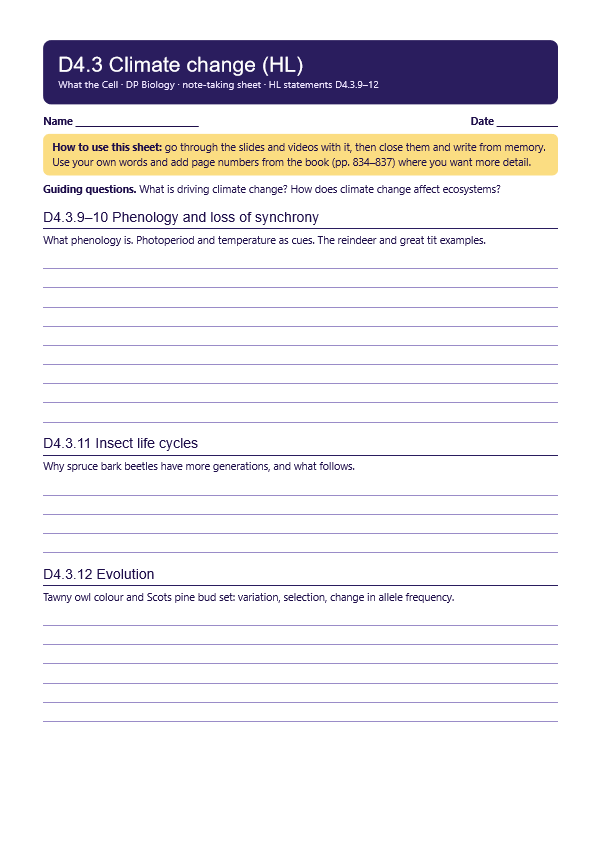
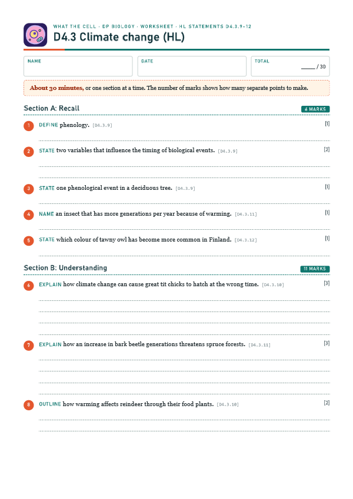

Phenology
p. 834Phenology is the study of the timing of biological events such as flowering, budburst, bud set, migration and nesting. Day length and temperature are the main cues.

Written for this site from the class slides, with textbook page references for each statement. The chapter is on pages 834–837 of the course textbook. Image credits are on slide 12.
Phenology is the study of the timing of biological events such as flowering, budburst, bud set, migration and nesting. Day length and temperature are the main cues.

Species may use different cues, so warming can put linked events out of step. Arctic plants grow earlier while reindeer still arrive by day length. Caterpillars peak earlier, and great tit chicks can hatch too late for them.
Warmth speeds insect development. Spruce bark beetles in northern regions can move from one generation a year to two, so more beetles attack each tree and more trees die.
With less snow, pale tawny owls are more visible and catch less food, so brown owls have become more common in Finland. In Scots pine, a longer growing season favours later bud set, so alleles for later bud set can rise in frequency.
Select a video to play it here. Select it again to close it.
Print this guide and complete it as you work through the slides and videos. It asks for your own explanations, so close the notes while you try each section.

The self-check needs JavaScript to run.
A printable worksheet covering all four statements, from quick recall to data questions and a longer answer. It has 30 marks and takes about 30 minutes, or you can do one section at a time.
Your teacher has the mark scheme.

You will need: Long-term phenology records, such as the published Kyoto cherry blossom dates, spreadsheet
Safety: No practical hazards.
Carry this out with your teacher's supervision and follow your school's lab rules.
Phenology uses records from scientists, the public and even centuries-old documents, such as Kyoto's cherry blossom dates.
Old diaries were never meant to be scientific data. Consider how they can be checked before being used as evidence.
Summarised in our own words. Use each code to find the exact wording in your textbook or the IB subject guide.
© 2026 Akash Parthi Bendran. Please ask before using or sharing any resources from this site: see permission to use.